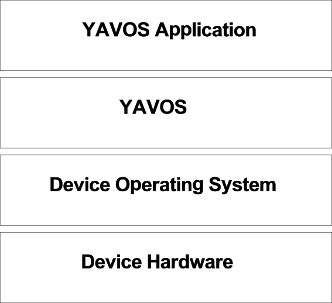
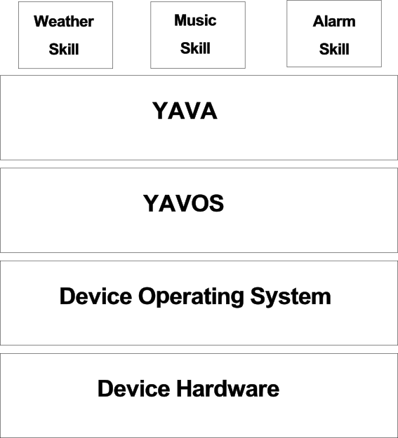
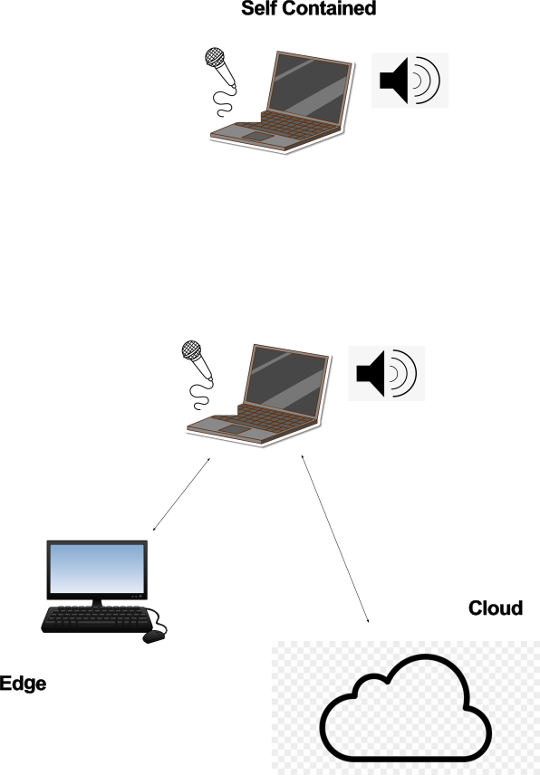

__ __ ___ _____ ____ \ \ / // \ \ / / _ \/ ___| \ V // _ \ \ / / | | \___ \ | |/ ___ \ V /| |_| |___) | |_/_/ \_\_/ \___/|____/
YAVOS is an open source, privacy respecting framework which makes it easy to develop voice enabled applications. It provides speech to text (STT) and text to speech (TTS) and supports local and/or remote microphones and speakers.
All services may be configured to run either locally or remotely. Local services may take advantage of a GPU if one is available and provide free transcription (either STT or TTS) while remote services typically require a paid API key but consume less local resource and provide faster response times.
YAVOS is a collection of independent processes which communicate using a websocket server known as the message bus. The file 'yavos.yml' controls the YAVOS run time environment which allows for the use of wav input from either a remote source, like a Javascript application running in a browser, or a local source like the microphone on the computer running YAVOS.
Likewise, output may be sent to a local device like the YAVOS host or a remote device like a browser or an embedded iOT application running on any web socket capable device.
YAVOS is simply a framework which provides the input and output of wav data either local or remotely. In between are the two main services; speech to text (STT) and text to speech (TTS). It should be noted that input and output wav data may come from both local and remote sources if so desired. For example, a smart microphone in the bedroom running in a browser may produce output which is played both on the YAVOS host and the remote browser as well as any other device listening for wav output messages on the audio output message bus.
YAVOS may be thought of as middleware which attempts to abstract out the messy details of having to deal with a microphone and speaker. It also provides a somewhat abstract interface to the speech to text and text to speech functions typically associated with voice applications. YAVOS is not a voice assistant or voice assistant framework as those layers have their own unique issues to contend with like intent/endpoint matching and audio channel contention.
A minimal YAVOS software stack would look like this

For a more complete voice assistant application the software stack might look more like this

YAVOS itself may be configured in a variety of ways as shown below.

Assuming you have the yavos.tgz file in the current directory and this is where you want to install the system run the following commands.
tar xzfv yavos.tgz cd YAVOS python3 -m venv venv_yavos source venv_yavos/bin/activate pip install -r requirements.txtIn most cases this should work, however, MocOS users may need to install a suitable alternative to aplay and arecord. Typically afplay and afrecord will suffice, however, on newer versions of MacOs you may need to install 'sox' using 'brew'. Then you should use the configuration screen to change your wav play and wav record commands. For wav recording typically the 'sox' utility 'rec' is used. Make sure to configure it to record at 16000 bps use the 16 bit integer format in mono. Consult the section below entitled "Configuring the System" to see how to change your wav in and out commands.
All scripts must be run from the directory (YAVOS/yavos/). To start YAVOS run
./Scripts/yavos_start.shThis will start the message bus, any configured wav input devices (smart microphones) and configured output devices and the STT and TTS service. By default the system assumes local microphone, local STT using Whisper, local TTS using Piper and local output using the speaker attached to the YAVOS host. Note the term YAVOS Host simpy refers to the computer you run YAVOS on.
$ ./Scripts/yavos_start.sh
*** Initializing YAVOS ***
INFO:MsgBus:Message Bus Starting Up ...
INFO:MsgBus:Host:0.0.0.0:4000
INFO:MsgBus:Message Bus Initialized
INFO:websockets.server:server listening on 0.0.0.0:4000
INFO:websockets.server:connection open
INFO:MsgBus:('127.0.0.1', 47750) Connected: tts_svc
INFO:websockets.server:connection open
INFO:MsgBus:('127.0.0.1', 47766) Connected: media_svc
INFO:websockets.server:connection open
INFO:MsgBus:('127.0.0.1', 47776) Connected: stt_svc
Start local Mic, vad=Normal
Recording WAVE 'stdin' : Signed 16 bit Little Endian, Rate 16000 Hz, Mono
Local Recognizer starting, vad mode is 2
INFO:websockets.server:connection open
INFO:MsgBus:('127.0.0.1', 55480) Connected: recognizer
LocalRecognizer: wav saver is running
*** YAVOS Started ***
*************************************************************
* You can run the config server using the following command *
* ./Scripts/run_config_server.sh from a separate terminal. *
*************************************************************
To stop the system you run
./Scripts/yavos_stop.sh
The easiest way to test the system is to run the echo application. This application will simply echo whatever it hears. To run the echo application run the base YAVOS system, then run the 'echo' test application as follows ...
python Examples/echo/echo.pyThis will start yavos and then run the echo python script shown below.
./Scripts/yavos_stop.sh Which will stop the YAVOS framework.
The echo application may be written in any language you like as long as it can connect to a websocket server. Keep in mind if you run this on a laptop or desktop with a standard microphone and speaker this will echo indefinitely if you set Barge In Enabled to True by checking the checkbox on the configuration screen. To avoid this echo either set Barge In Enabled to false or use headphones as the system currently does not support echo cancellation. If you do choose to use headphones make sure to enable Barge In.
YAVOS applications are very simple programs. This is the source code for the echo application (Examples/echo/echo.py).
import time
from threading import Event
from Bus.MsgBusClient import MsgBusClient
class EchoSvc:
def my_callback(self, msg):
text = msg['data']['utterance']
self.mbc.send('tts', 'tts_svc', {'text': text, 'filename':'junk.wav'})
def __init__(self, bus_id):
self.bus_id = bus_id
self.mbc = MsgBusClient(self.bus_id, sync=False)
self.mbc.on('utterance', self.my_callback)
# wait for connection forever
while self.mbc.status != 'Connected':
time.sleep(1)
def stop(self):
self.mbc.exit()
if __name__ == "__main__":
bus_id = 'intent_svc'
echo_svc = EchoSvc(bus_id)
Event().wait()
YAVOS applications tend to run in their own python (or go or node, etc.) process though they themselves may be multithreaded. They communicate with the system and other applications using the system wide message bus. The message bus is a websocket server.
If you would like to run the system configuration webserver open up a second terminal (a terminal other than the one you ran the yavos system from) and type the following command.
./Scripts/run_config_server.sh
Then open up a browser, either from the YAVOS server in which case you connect to URL http://localhost:8000, or a browser on another machine, in which case you connect to the Yavos Host IP address. This is typically an address like 10.0.0.10 or 192.168.1.20. Once you connect your browser to the proper URL you should see the following screen.
From here you select "Configure System" and you will be brought to the main system configuration screen which should look like this.

Note if you change your system configuration you must restart the system for the changes to take effect. This is also true if you choose to edit the yavos.yml file manually which is not encouraged but does work.
The local speaker and microphone are accessed using native utilities. By default aplay is used to play wav files and arecord is used to record wav files. If you are a MacOS user your commands will be different so the configuration screen allows you to set the command to be run to set the microphone input level and the speaker output volume. These commands will vary based on your specific version of operating system so the table below lists some common commands for these functions.
| Operating System | Version | Function | Command | Notes |
| Ubuntu | 22.04 | Record | arecord -f s16_le -c 1 -r 16000 | Default system configuration |
| Ubuntu | 22.04 | Play | aplay %s >/dev/null 2>&1 | Default system configuration |
| Ubuntu | 22.04 | Set Mic | pactl set-source-volume $(pactl info | grep "Default Source" | cut -d " " -f3 %s) | Requires Pulse Audio |
| Ubuntu | 22.04 | Set Speaker | amixer -D pulse sset Master %s | Requires Pulse Audio to be installed |
| OSX | Sierra | Record | rec -b 16 -c 1 -r 16000 | OSX and MacOS. Note rec is part of sox which you may have to install |
| OSX | Sierra | Play | afplay %s >/dev/null 2>&1 | Typically installed by default but may need to install xcode. |
| OSX | Sierra | Set Mic | osascript -e 'set volume input volume %s' | OSX uses osascript |
| OSX | Sierra | Set Speaker | osascript -e 'set volume output volume %s' | MacOS uses osascript |
By default audio input and output are assumed to be local which means the microphone and speaker on the system running YAVOS, however, YAVOS also supports remote audio in and remote audio out using an audio input bus and an audio output bus. These are websocket servers that exchnage binary data. Currently these are not installed as systemd services so you must run them each from a separate terminal. The commands are as follows.
To run the audio output bus so audio output will be played on a remote device open a new terminal and run the following command.
./Scripts/run_audio_bus_out.shTo run the audio input bus so audio input will be sent from a remote intelligent mic, open a new terminal and run the following command.
./Scripts/run_audio_bus_in.sh
Note you will need remote devices to actually provide the input and output. These can be any device capable of connecting to a websocket server. An example of such devices written in Javascript may be found on the configuration server under the option Remote Devices. See the audio input bus protocol for a detailed description of what is expected of a remote smart microphone. The audio output bus is a web socket server which sends out play commands to all connected devices. This play command is the audio out message and contains the URL of a wav file to be played. See MSG_AUDIO_OUT for the exact format of the message.
YAVOS supports the concept of configurable drivers for nearly everything. A driver is simply a module which provides access to a device or service, like TTS (text to speech) or STT (speech to text). Drivers are located in their respective locations (TTS/Local/, TTS/Remote/, STT/Local/ and STT/Remote/) on the local filesystem. When placed in the proper location the driver will automatically show up in the configuration server. No further installation is required.
For example if you create a drirectory under TTS/Local/ named 'coqui' then the next time you run the configuration server 'coqui' will show up as an available TTS local option. Note your driver must currently be written in Python and must have a class variable named model_names for speech to text drivers and voices for text to speech drivers. These are the values which will be presented as models/voices when your driver is selected on the configuration screen. Your driver Python file must be named either stt_driver.py or tts_driver.py. STT drivers must provide the class named STTDriver and TTS drivers must provide the class TTSDriver. Each class must provide a method named transcribe. See any of the driver files listed under the YSTT/ or YTTS/ directories to see what a driver file looks like.
Here is an example of the piper TTS service directory
2 Nov 24 14:53 __init__.py
4096 Oct 29 21:30 onnx_models
124 Oct 29 21:31 test_tts.sh
556 Nov 24 15:02 tts_driver.py
The tts_driver file MUST be present and MUST conform
to the following structure.
class TTSDriver:
voices = ["en_US-amy-medium.onnx",]
def __init__(self, service='default_name', voice='default_voice', api_key=None_or_FilePath):
def get_models(self):
return self.model_names
def transcribe(self, text, wav_filename):
wav_filename = "Config/tts_out/" + wav_filename
# do transcription here, save to filename
return wav_filename
In other words it MUST be of class TTSDriver and it MUST provide a
transcribe() method which takes in a text string and produces a
wav file in the directory "Config/tts_out" named wav_filename and
it must contain a class variable named 'voices' which is a list of
voices the tts driver supports. These will automatically show up
on the configuration screen.
STT drivers are very similar. Here is an abbreviated version of the
Whisper speech to text (STT) driver.
class STTDriver:
model_names = ["tiny", "tiny.en", "base"]
def __init__(self, model='tiny.en', use_gpu=False, api_key=None):
self.device='cpu'
if str(use_gpu).lower() == 'true':
self.device='cuda'
self.model = whisper.load_model(self.model_name, device=self.device)
def get_models(self):
return self.model_names
def transcribe(self, wav_filename):
return self.model.transcribe(wav_filename, fp16=False, language='English')['text'].strip()
The system ships with the following drivers installed by default.
| Local or Remote | TTS or STT | Name | Free* | Description |
| Local | TTS | Piper | Yes | Piper is a lightweight TTS module from Rhasspy |
| Local | TTS | Coqui | Yes | eSpeak based classic TTS module from Coqui |
| Remote | TTS | Polly | No | Polly is a cloud based TTS API from Amazon |
| Remote | TTS | 11Labs | No | Eleven labs offers excellent cloud based TTS |
| Local | STT | Whisper | Yes | Whisper provides excellent lightweight STT from OpenAI |
| Local | STT | Vosk | Yes | Vosk is a newer lightweight STT with a very small footprint |
| Remote | STT | No | Google provides very good STT in the cloud | |
| Remote | STT | OpenAI | No | OpenAI also provides very good cloud based STT API |
Adding new drivers is relatively easy and described in detail in the developer documentation.
YAVOS is a Linux application and can run on smaller devices if required. To run completely locally (Piper TTS, Vosk STT) requires less than 2GB of RAM (Vosk 500MB, Piper 1GB) and can run entirely on the CPU. A low end Raspberry Pi with 2GB of RAM should work fine. Requirements if you choose to run entirely remotely are as low as 500MB (using basic Post type APIs) and will run significantly faster, however, these services while offering free-trials are not technically free and could engender cost if used excessively which voice assistants tend to do.
YAVOS has been tested on a Dell Laptop with an Nvidia Geoforce RTX 3050 (4GB VRAM), a Raspberry Pi II with 2GB of RAM and a MacBook Pro with 4GB of RAM. It has also been run on various Desktops and Laptops with and without a GPU. YAVOS is entirely configurable and it really does not have a bunch of other requirements however, it will obviously need to have a way to play and record audio.
If remote devices like a remote microphone and a remote speaker are used (for example, a browser on a separate machine) then the local play and record utilities (aplay and arecord) are not used at all and do not even have to be present on the system. In this case only ffmpeg is required. For custom environments you would simply configure the specific commands to use whatever utilities you prefer (like maybe sox) using the configuration server.
| Utility | Function | Required | Comments |
| ffmpeg | Convert audio files | Only required if remote mic is used | Used by YAVOS and underlying libraries |
| aplay | Play wav files | Only required if local speaker is used | On OSX use afplay |
| arecord | Record voice to wav file | Only required if local mic is used | On OSX use afrecord |
| pactl | Adjust mic level | Optional | If missing you will need to set mic level manually |
| amixer | Adjust speaker volume | Optional | If missing you will need to set speaker volume manually |
YAVOS applications are somewhat limited in that they must provide solutions to many issues which are unique to a voice assistant application like managing contention of the input (microphone) and output (speaker) channels.
In order to receive user spoken input, a YAVOS application must register on the message bus as the intent service. The Intent Service is the endpoint which receives utterance messages. The system wide message bus is a directed message bus with messages targeted to a specific endpoint, unlike some message bus implementations where all messages are broadcast messages.
This is accomplished by providing the value 'intent_svc' as the bus id when the application connects to the message bus (see the example applications above). Once an application has connected to the message bus as the intent service it will start receiving utterance messages which are human spoken utterances.
All messages on the system message bus adhere to the following format
msg_type - see message types below source - the bus id of the source of the message target - the bus id of the target of the message data - the data to be exchangedThe system inserts an additional field named 'ts' which will hold the timestamp for the message. Messages are encoded in JSON format. No binary data is exchanged over the system message bus, however, the audio input bus does transfer binary data. The System Monitor which is available from the main configuration server shows the messages from the system message bus in real-time. You may also look at the file in the Config/ directory named yavos.log for additional information about the system.
The base YAVOS system uses the following messages on the system message bus.
This message is produced by the media service. If a remote audio output device (speaker) is configured the media service will place this message on the audio output bus. It will be broadcast to all devices listening on the bus.
The tts service produces a wav file from a text string but it sends a message to the media service to actually play it.
This message is produced by both the local recognizer and the remote recognizer which is part of the audio input bus when they have detected human voice. This is what is meant when it is said any device capable of performing silence detection (typically using webrtcvad) and connecting to a web socket server may serve as a remote smart microphone.
This message is consumed by the speech to text (STT) service who converts it to a text message which is subsequently placed on the system message bus with a target destination of 'intent_svc'.
This message is sent by the speech to text service each time a human utterance is recognized. It is always sent to the intent_svc endpoint.